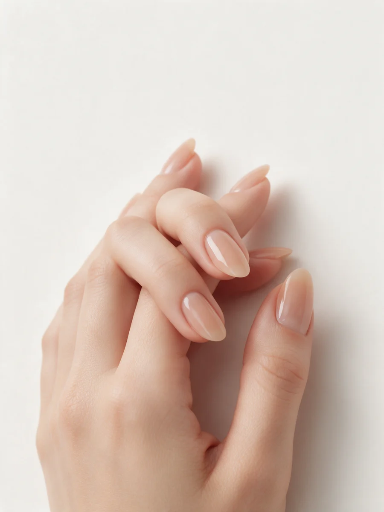
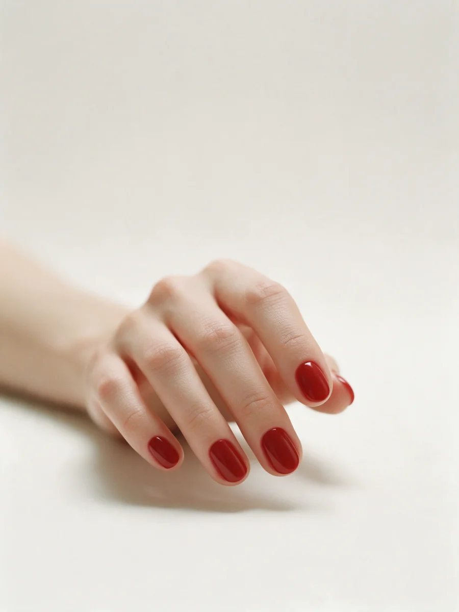
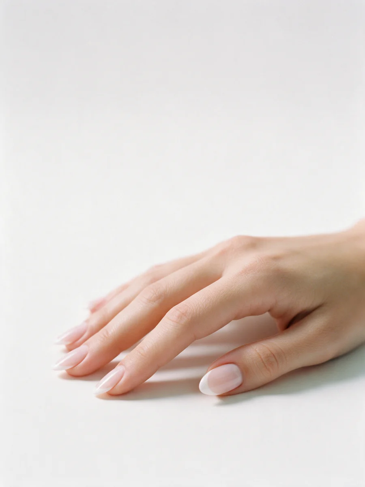
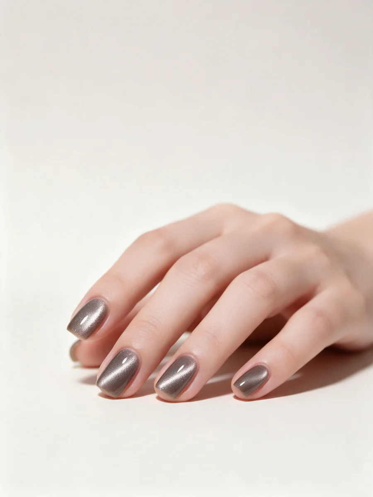
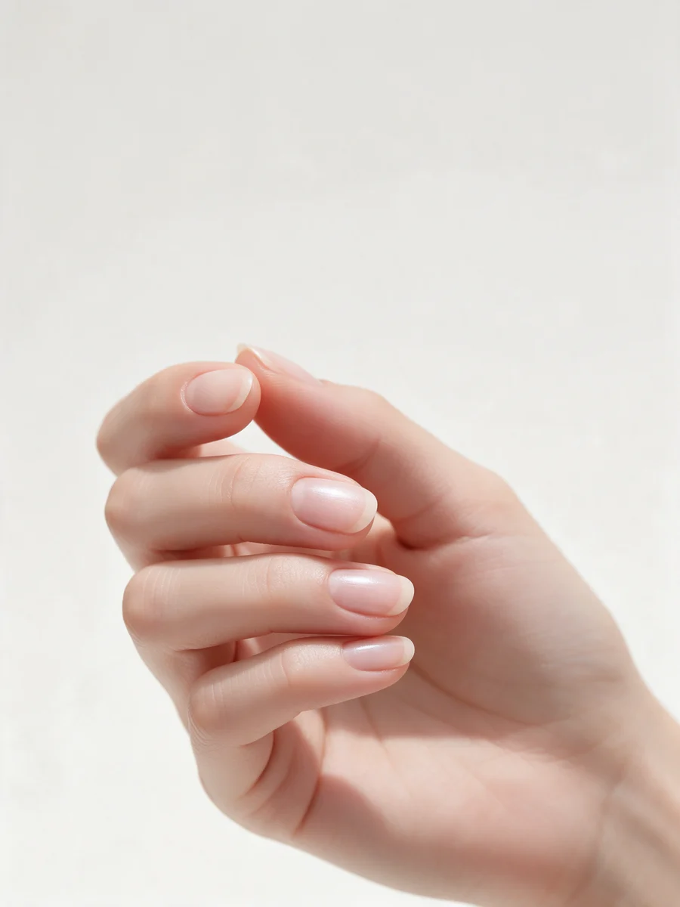
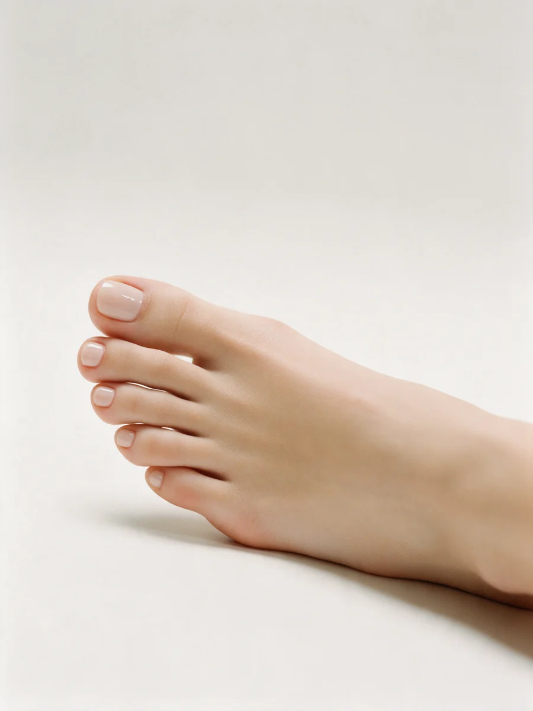
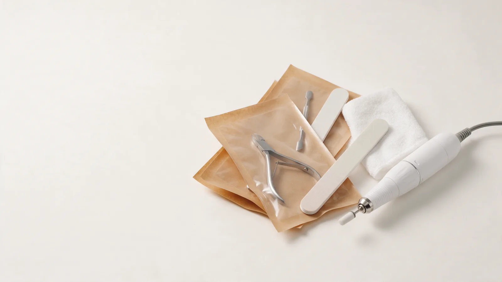
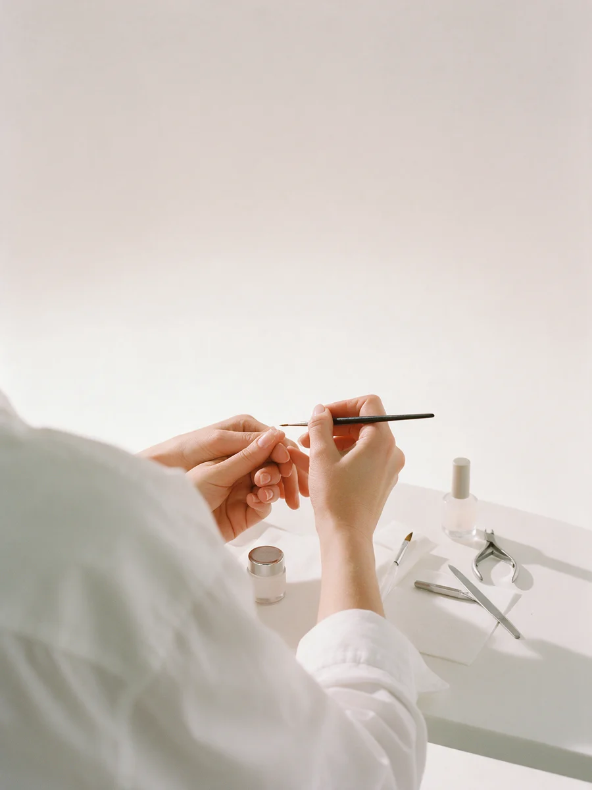

Маникюр и педикюр в Петербурге – каждый день до 21:00
Не ждать окна неделями: студия на Большеохтинском открыта ежедневно с 9 до 21, мастеров несколько. Под каждым покрытием – цена из прайса.


Нюд, короткий миндаль
Маникюр + покрытие гель-лак. 2 500 ₽


Красный, короткий овал
Маникюр + покрытие гель-лак. 2 500 ₽


Френч, средний миндаль
Маникюр + гель-лак, французский. 3 100 ₽


Кошачий глаз, мягкий квадрат
Маникюр + покрытие «Кошачий глаз». 2 800 ₽


Японский маникюр, без цвета
Masura: уход и блеск натуральной пластины. 1 800 ₽
Весь прайс – до записи
Цены из прайса студии на Яндекс.Картах. Покрытие, снятие и дизайн указаны отдельно – видно, из чего складывается сумма.
- Ежедневно 09:00–21:00, без выходных
- Онлайн-запись или сообщение в Телеграм – как удобнее
- Оплата картой, по СБП или наличными

Маникюр без покрытия
1 500 ₽Аппаратный или комбинированный. Снятие старого покрытия – отдельно, 600 ₽.
Маникюр + гель-лак
2 500 ₽Со снятием старого гель-лака – 2 800 ₽, «Кошачий глаз» – 2 800 ₽, френч и лунки – 3 100 ₽.
Японский маникюр Masura
1 800 ₽Без цветного покрытия: уход и естественный блеск ногтя. Европейский маникюр – 1 100 ₽.
Укрепление ногтей
от 800 ₽Акриловое под гель-лак – 800 ₽, система IBX – 900 ₽.
Дизайн
от 50 ₽Френч, лунки, узор – 200 ₽, сложный рисунок – 300–350 ₽, аэрограф на все ногти – 1 100 ₽.
Педикюр + гель-лак
3 000 ₽Комбинированный без покрытия – 2 500 ₽, Light – 1 800 ₽, со снятием и покрытием – 3 300 ₽.
Медицинский педикюр
от 2 800 ₽Аппаратный, три степени сложности: 2 800, 3 100, 3 500 ₽. Вросший ноготь, мозоли, трещины – от 400 ₽.
Мужской и детский
от 1 000 ₽Мужской маникюр – 1 800 ₽, детский до 6 лет – 1 000 ₽, мужской педикюр – 2 800 ₽.

Пока делают маникюр – кофе и кино
- Кофе, чай, водаПодают в стеклянной посуде, кофе – из кофейни по соседству
- Телевизор в кабинетеВремя процедуры можно провести за фильмом
- Отдельный кабинет педикюраМаникюр и педикюр – в одной студии, можно за один визит
- Парковка рядомБольшеохтинский проспект, 10, Красногвардейский район
Мастеров несколько – выберите своего
В отзывах на Картах клиенты называют мастеров по именам: Ксения, Вероника, Ирина, Юлия, Марина.
Записаться можно к конкретному мастеру или на ближайшее свободное время.
Маникюр, педикюр и медицинский педикюр – в одной студии: не нужно искать подолога отдельно.

Что пишут на Яндекс.Картах
-
«Лучшая студия ногтевого сервиса в Красногвардейском районе! Мастер Ирина Здобина профессионал высшего класса! Очень уютная и теплая атмосфера! Приветливые и внимательные администраторы! И конечно вкусный кофе и всегда живые цветы!»
-
«Делала Японский маникюр у Юлии и педикюр у Ксении. Все очень понравилось. Работа выполнена качественно. Обработка кутикулы ровно, без травм. Салон отличный, пребывание там было комфортным, кофе вкусный, администраторы максимально приятные. Еще и пробнички кремов в дали в подарок.»
-
«Отличное место! Рядом с домом, хожу регулярно, раз в две недели. Мастер Вероника Быкова выше всяких похвал, работает быстро аккуратно, без лишней болтовни. Спасибо ей за профессионализм!»
Запись каждый день с 9 до 21
Напишите в Телеграм или позвоните: подберём мастера, время и ответим на вопросы про покрытие.